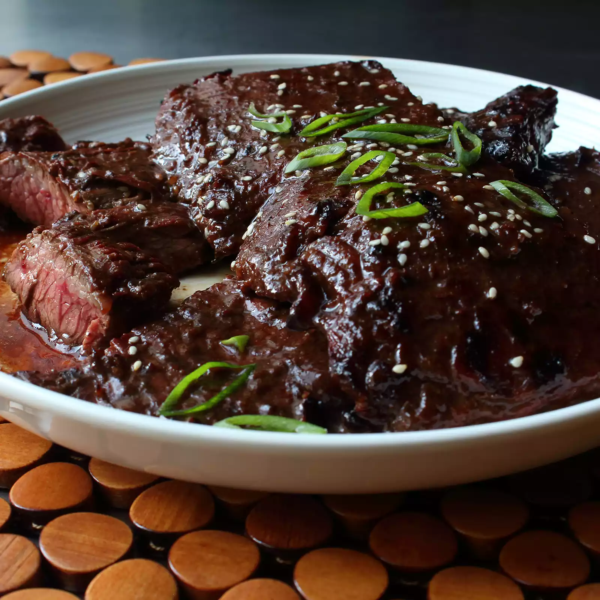

Grilled Hoisin Beef

Description
The (underrated) hoisin sauce is a thickened, fermented soy-sauce-like substance, flavored with chilies,
garlic, vinegar, sugar, and, of course, exotic spices. It makes a great marinade.
And unless you horribly overcook it, this skirt steak is juicy and tender.
Ingredients
- 1 (1 pound) beef skirt steak
- ⅓ cup hoisin sauce
- 3 tablespoons Chinese vinegar (or sherry vinegar)
- 1 tablespoon soy sauce
- 2 teaspoons hot sauce
- 2 teaspoons sesame oil
- 1 tablespoon grated fresh ginger root
- 4 cloves garlic, finely minced
- 1 tablespoon packed brown sugar
- 1 teaspoon salt
- ½ teaspoon freshly ground black pepper
- 1 green onion, light parts only, minced
- Toasted sesame seeds
- Preheat oven to 350 degrees F (175 degrees C). Grease a 9x13-inch casserole dish.
- Heat a large skillet over medium-high heat and stir in ground beef.
Cook and stir until beef is crumbly, evenly browned, and no longer pink, about 10 minutes.
Drain and discard any excess grease. Add water and taco seasoning; cook and stir until mixture has
thickened, 5 to 10 minutes.
- Arrange 3 tortillas in the bottom of the casserole dish; spread about half the can of refried beans and
half the ground beef atop the tortilla layer. Sprinkle 1 cup Colby-Jack cheese over ground beef layer.
Arrange 3 more tortillas over the cheese. Spread in the remaining 1/2 can refried beans and half the jar of
taco sauce; sprinkle with 1 cup Colby-Jack cheese. Arrange 3 more tortillas and top with remaining
ground beef and 1 cup Colby-Jack cheese. Top with last 3 tortillas and remaining 1/2 jar taco sauce.
- Bake in the preheated oven until top tortilla layer begins to brown, 20 to 25 minutes.
Sprinkle 1 cup Colby-Jack cheese over lasagna.
- Turn on oven's broiler
- Place lasgana under the broiler until Colby-Jack cheese is melted and bubbling, 3 to 5 minutes.